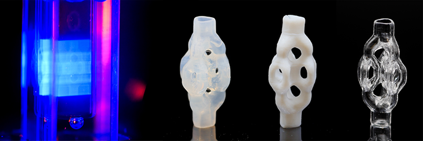
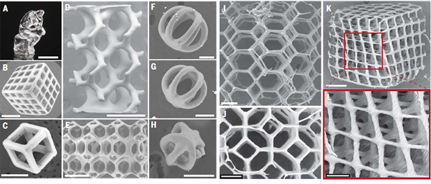

In collaboration with the Freiburg, Germany-based startup Glassomer, we have shown (in an April 2022 report in Science) that computed axial lithography can create glass micro-lattices and microfluidic networks by printing dispersions of silica nanoparticles in refractive-index-matched photopolymers. The CAL printing process creates a green part which is subsequently debinded and sintered to yield solid silica (Fig. 1). Minimum positive feature sizes achieved to date with micro-CAL are 50 micrometers in silica (Fig. 2) and 20 micrometers in solid polymer. Minimum internal channel diameters achieved are around 150 micrometers in silica.

CAL permits an exceptionally high silica volume loading fraction, enabling modest and isotropic shrinkage during the subsequent sintering. It also exhibits nanometre-level surface roughness that is commensurate with micro-optical manufacturing.

This work featured on the cover of the 15 April 2022 edition of Science and our team enjoyed working with Adam Lau, photographer with Berkeley’s College of Engineering, and Emily Petersen, senior photo editor at Science, on this. A blog post by Emily about the process is here. A news article from Berkeley’s College of Engineering about the work is here.